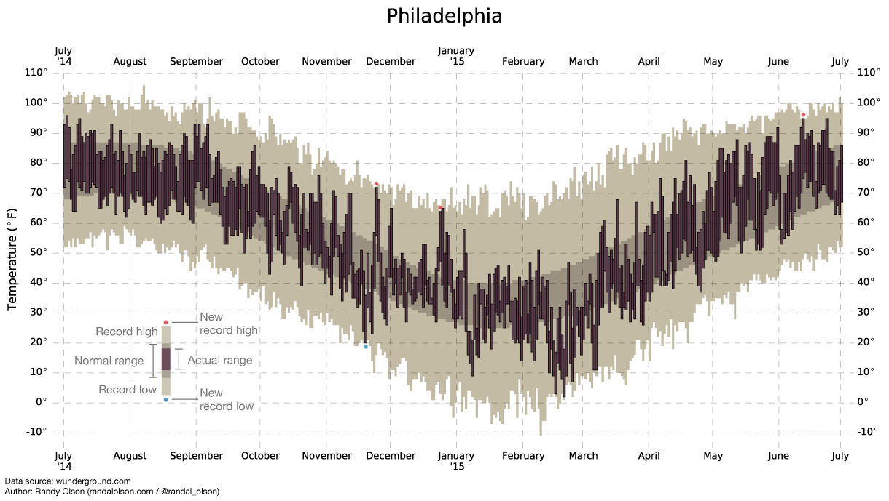
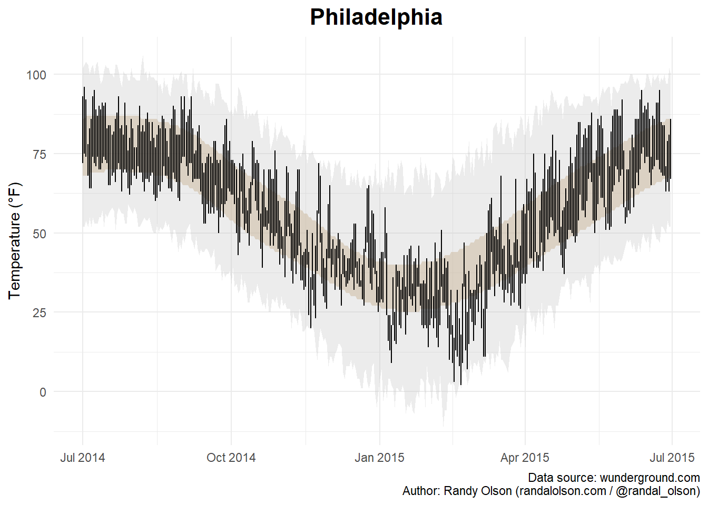
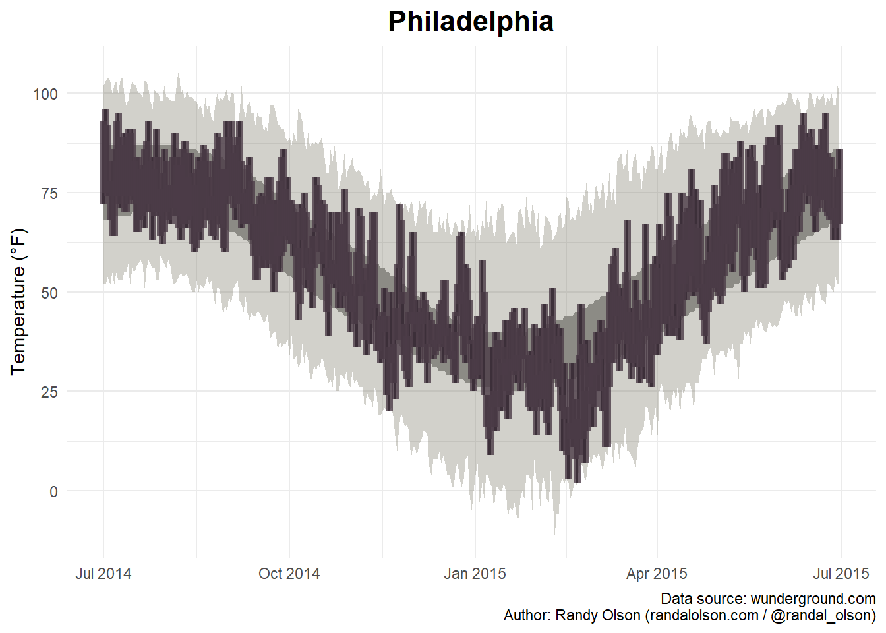
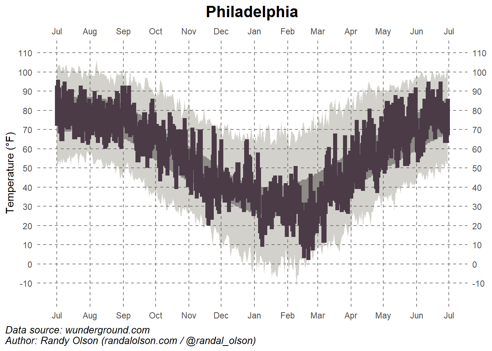
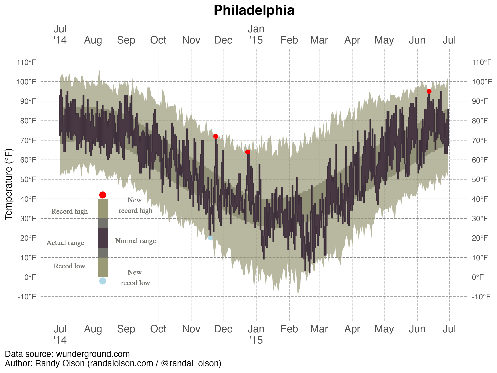

The following package(s) will be installed:
- tidyverse [2.0.0]
These packages will be installed into "C:/Users/mn27712/OneDrive - University of Georgia/DATA BACKUP/MACBOOK AND IPHONE_/Desktop/MADA2025/muhammadnasir-mada2025/renv/library/windows/R-4.4/x86_64-w64-mingw32".
# Installing packages --------------------------------------------------------
- Installing tidyverse ... OK [linked from cache]
Successfully installed 1 package in 29 milliseconds.
library(tidyverse)
── Attaching core tidyverse packages ──────────────────────── tidyverse 2.0.0 ──
✔ dplyr 1.1.4 ✔ readr 2.1.5
✔ forcats 1.0.0 ✔ stringr 1.5.1
✔ ggplot2 3.5.1 ✔ tibble 3.2.1
✔ lubridate 1.9.4 ✔ tidyr 1.3.1
✔ purrr 1.0.4
── Conflicts ────────────────────────────────────────── tidyverse_conflicts() ──
✖ dplyr::filter() masks stats::filter()
✖ dplyr::lag() masks stats::lag()
ℹ Use the conflicted package (<http://conflicted.r-lib.org/>) to force all conflicts to become errors
install.packages("ggplot2")
The following package(s) will be installed:
- ggplot2 [3.5.1]
These packages will be installed into "C:/Users/mn27712/OneDrive - University of Georgia/DATA BACKUP/MACBOOK AND IPHONE_/Desktop/MADA2025/muhammadnasir-mada2025/renv/library/windows/R-4.4/x86_64-w64-mingw32".
# Installing packages --------------------------------------------------------
- Installing ggplot2 ... OK [linked from cache]
Successfully installed 1 package in 35 milliseconds.
library(ggplot2)library(here)
here() starts at C:/Users/mn27712/OneDrive - University of Georgia/DATA BACKUP/MACBOOK AND IPHONE_/Desktop/MADA2025/muhammadnasir-mada2025
install.packages("patchwork") # This package is to redefine "/" operator for plot arrangement
The following package(s) will be installed:
- patchwork [1.3.0]
These packages will be installed into "C:/Users/mn27712/OneDrive - University of Georgia/DATA BACKUP/MACBOOK AND IPHONE_/Desktop/MADA2025/muhammadnasir-mada2025/renv/library/windows/R-4.4/x86_64-w64-mingw32".
# Installing packages --------------------------------------------------------
- Installing patchwork ... OK [linked from cache]
Successfully installed 1 package in 27 milliseconds.
library(patchwork)install.packages("writexl")
The following package(s) will be installed:
- writexl [1.5.1]
These packages will be installed into "C:/Users/mn27712/OneDrive - University of Georgia/DATA BACKUP/MACBOOK AND IPHONE_/Desktop/MADA2025/muhammadnasir-mada2025/renv/library/windows/R-4.4/x86_64-w64-mingw32".
# Installing packages --------------------------------------------------------
- Installing writexl ... OK [linked from cache]
Successfully installed 1 package in 31 milliseconds.
The following package(s) will be installed:
- ggforce [0.4.2]
These packages will be installed into "C:/Users/mn27712/OneDrive - University of Georgia/DATA BACKUP/MACBOOK AND IPHONE_/Desktop/MADA2025/muhammadnasir-mada2025/renv/library/windows/R-4.4/x86_64-w64-mingw32".
# Installing packages --------------------------------------------------------
- Installing ggforce ... OK [linked from cache]
Successfully installed 1 package in 30 milliseconds.
library(ggforce)install.packages("dplyr")
The following package(s) will be installed:
- dplyr [1.1.4]
These packages will be installed into "C:/Users/mn27712/OneDrive - University of Georgia/DATA BACKUP/MACBOOK AND IPHONE_/Desktop/MADA2025/muhammadnasir-mada2025/renv/library/windows/R-4.4/x86_64-w64-mingw32".
# Installing packages --------------------------------------------------------
- Installing dplyr ... OK [linked from cache]
Successfully installed 1 package in 29 milliseconds.
The following package(s) will be installed:
- ggridges [0.5.6]
These packages will be installed into "C:/Users/mn27712/OneDrive - University of Georgia/DATA BACKUP/MACBOOK AND IPHONE_/Desktop/MADA2025/muhammadnasir-mada2025/renv/library/windows/R-4.4/x86_64-w64-mingw32".
# Installing packages --------------------------------------------------------
- Installing ggridges ... OK [linked from cache]
Successfully installed 1 package in 28 milliseconds.
The following package(s) will be installed:
- gt [0.11.1]
These packages will be installed into "C:/Users/mn27712/OneDrive - University of Georgia/DATA BACKUP/MACBOOK AND IPHONE_/Desktop/MADA2025/muhammadnasir-mada2025/renv/library/windows/R-4.4/x86_64-w64-mingw32".
# Installing packages --------------------------------------------------------
- Installing gt ... OK [linked from cache]
Successfully installed 1 package in 15 milliseconds.
The following package(s) will be installed:
- gtExtras [0.5.0]
These packages will be installed into "C:/Users/mn27712/OneDrive - University of Georgia/DATA BACKUP/MACBOOK AND IPHONE_/Desktop/MADA2025/muhammadnasir-mada2025/renv/library/windows/R-4.4/x86_64-w64-mingw32".
# Installing packages --------------------------------------------------------
- Installing gtExtras ... OK [linked from cache]
Successfully installed 1 package in 15 milliseconds.
library(gtExtras)
About the dataset
In this axercise, I use US Weather History Dataset which contains weather summary of several cities. In this exercise, I only use Philadelphia as example, because the chart are same across the cities. I got the dataset and chart from fivethirtyeight. Link: https://fivethirtyeight.com/features/what-12-months-of-record-setting-temperatures-looks-like-across-the-u-s/
#| label: fig-temperature#| fig-cap: "Temperature Record in Philadelphia."#| echo: FALSEknitr::include_graphics(here("presentation-exercise","results","figures","phila-ori.png"))

Read the dataset
# Load the datasetdata_loc <-here("presentation-exercise", "data", "Philadelphia.csv") data <-read_csv(data_loc)
Rows: 365 Columns: 13
── Column specification ────────────────────────────────────────────────────────
Delimiter: ","
chr (1): date
dbl (12): actual_mean_temp, actual_min_temp, actual_max_temp, average_min_te...
ℹ Use `spec()` to retrieve the full column specification for this data.
ℹ Specify the column types or set `show_col_types = FALSE` to quiet this message.
data$date <-as.Date(data$date, format="%Y-%m-%d") # convert variable into date format head(data)
date actual_mean_temp actual_min_temp actual_max_temp
Min. :2014-07-01 Min. :10.00 Min. : 2.00 Min. :17.00
1st Qu.:2014-09-30 1st Qu.:39.00 1st Qu.:33.00 1st Qu.:46.00
Median :2014-12-30 Median :59.00 Median :50.00 Median :69.00
Mean :2014-12-30 Mean :55.88 Mean :47.27 Mean :63.98
3rd Qu.:2015-03-31 3rd Qu.:73.00 3rd Qu.:64.00 3rd Qu.:82.00
Max. :2015-06-30 Max. :86.00 Max. :77.00 Max. :96.00
average_min_temp average_max_temp record_min_temp record_max_temp
Min. :25.00 Min. :40.00 Min. :-11.00 Min. : 61.00
1st Qu.:32.00 1st Qu.:49.00 1st Qu.: 9.00 1st Qu.: 73.00
Median :46.00 Median :66.00 Median : 29.00 Median : 88.00
Mean :47.22 Mean :64.72 Mean : 28.03 Mean : 84.99
3rd Qu.:63.00 3rd Qu.:81.00 3rd Qu.: 46.00 3rd Qu.: 97.00
Max. :70.00 Max. :87.00 Max. : 59.00 Max. :106.00
record_min_temp_year record_max_temp_year actual_precipitation
Min. :1872 Min. :1874 Min. :0.0000
1st Qu.:1930 1st Qu.:1931 1st Qu.:0.0000
Median :1960 Median :1957 Median :0.0000
Mean :1947 Mean :1958 Mean :0.1245
3rd Qu.:1969 3rd Qu.:1990 3rd Qu.:0.0500
Max. :2014 Max. :2014 Max. :2.0100
average_precipitation record_precipitation
Min. :0.0800 Min. :0.850
1st Qu.:0.1000 1st Qu.:1.550
Median :0.1100 Median :1.880
Mean :0.1138 Mean :2.135
3rd Qu.:0.1200 3rd Qu.:2.490
Max. :0.1500 Max. :8.020
Prompt to AI
Me: Hi Good morning, thanks for being my best friend for coding activities.
ChatGPT: Of course, I will be always be your friend, what can I help you?
Me: Today, I want to regenerate a chart. Here I provide the picture of the chart, the original link of the chart, and the dataset. Please generate the code to create the exact same chart, including the color, display, and also legend. Please look at the chart very details to be able to create the same chart. Please generate the code in R.
# Create the plotplot_1 <-ggplot(data, aes(x = date)) +# Shaded area for normal rangegeom_ribbon(aes(ymin = average_min_temp, ymax = average_max_temp), fill ="tan", alpha =0.5) +# Shaded area for record rangegeom_ribbon(aes(ymin = record_min_temp, ymax = record_max_temp), fill ="grey", alpha =0.3) +# Lines for actual min and max tempsgeom_linerange(aes(ymin = actual_min_temp, ymax = actual_max_temp), color ="black") +# Points for new record highs and lowsgeom_point(data =filter(data, actual_max_temp > record_max_temp), aes(y = actual_max_temp), color ="red", size =2) +geom_point(data =filter(data, actual_min_temp < record_min_temp), aes(y = actual_min_temp), color ="blue", size =2) +# Labels and themeslabs(title ="Philadelphia",x =NULL,y ="Temperature (°F)",caption ="Data source: wunderground.com\nAuthor: Randy Olson (randalolson.com / @randal_olson)") +theme_minimal() +theme(plot.title =element_text(hjust =0.5, size =16, face ="bold"))plot(plot_1)

Me: Hi, thank you for generating the code. However, there are some detail different with the original chart.
Here, I modify by myself with some help from ChatGPT. In this step, I try to adjust the line. I see from the original chart, it is look more bar than line.
# Create the plotplot_2 <-ggplot(data, aes(x = date)) +# Shaded area for normal rangegeom_ribbon(aes(ymin = average_min_temp, ymax = average_max_temp), fill ="#9B9B9B", alpha =1) +# Shaded area for record rangegeom_ribbon(aes(ymin = record_min_temp, ymax = record_max_temp), fill ="#696651", alpha =0.3) +geom_linerange(aes(ymin = actual_min_temp, ymax = actual_max_temp), color ="black", size =0.8) +geom_linerange(aes(ymin = actual_min_temp, ymax = actual_max_temp), color ="#4B3B47", size =2, alpha =0.8)+geom_point(data =filter(data, actual_max_temp > record_max_temp), aes(y = actual_max_temp), color ="red", size =10) +geom_point(data =filter(data, actual_min_temp < record_min_temp), aes(y = actual_min_temp), color ="blue", size =2) +# Labels and themeslabs(title ="Philadelphia",x =NULL,y ="Temperature (°F)",caption ="Data source: wunderground.com\nAuthor: Randy Olson (randalolson.com / @randal_olson)") +theme_minimal() +theme(plot.title =element_text(hjust =0.5, size =16, face ="bold"))
Warning: Using `size` aesthetic for lines was deprecated in ggplot2 3.4.0.
ℹ Please use `linewidth` instead.
plot(plot_2)

This is the step where I change many things, including, put the date (months) in both sides (top and bottom, and put ’14 below Jul, and ’15 below Jan), I also put the temperature both side. In the previous chart, the grip also did not show every month. Therefore, I adjust the grip into each month and the temperature for every 10 Fahrenheit degree. I adjust the position of the caption (source and author).
plot_3 <-ggplot(data, aes(x = date)) +# Shaded area for normal rangegeom_ribbon(aes(ymin = average_min_temp, ymax = average_max_temp), fill ="#9B9B9B", alpha =1) +# Shaded area for record rangegeom_ribbon(aes(ymin = record_min_temp, ymax = record_max_temp), fill ="#696651", alpha =0.3) +# Temperature rangesgeom_linerange(aes(ymin = actual_min_temp, ymax = actual_max_temp), color ="black", linewidth =0.8) +geom_linerange(aes(ymin = actual_min_temp, ymax = actual_max_temp), color ="#4B3B47", linewidth =2, linetype =1) +# Record-breaking temperatures (Fixed)geom_point(data = data %>%filter(!is.na(actual_max_temp), actual_max_temp > record_max_temp),aes(x = date, y = actual_max_temp), color ="red", size =3) +geom_point(data = data %>%filter(!is.na(actual_min_temp), actual_min_temp < record_min_temp),aes(x = date, y = actual_min_temp), color ="blue", size =3) +# Labels and themeslabs(title ="Philadelphia",x =NULL,y ="Temperature (°F)",caption ="Data source: wunderground.com\nAuthor: Randy Olson (randalolson.com / @randal_olson)") +# Custom themetheme_minimal() +theme(plot.title =element_text(hjust =0.5, size =16, face ="bold"),panel.background =element_rect(fill ="white", color =NA),panel.grid.major =element_line(color ="grey50", linetype ="dashed"), # Remove empty linetype valuepanel.grid.minor =element_blank(),# Align caption to the leftplot.caption.position ="plot",plot.caption =element_text(hjust =0, face ="italic", size =10) ) +# Define x-axis (date) for both top and bottomscale_x_date(date_breaks ="1 month", date_labels ="%b",sec.axis =dup_axis(name =NULL)) +# Duplicate axis at top# Define y-axis (temperature) for both left and rightscale_y_continuous(breaks =seq(-10, 110, 10),sec.axis =dup_axis(name =NULL),limits =c(min(data$record_min_temp) -5, max(data$record_max_temp) +5)) # Ensure all values fit# Plot the chartplot(plot_3)

The chart looks much better. However, the new record for high and low temperature did not show up in the chart. Therefore, I try to create a new set then insert it into the chart.
# Identify new record highs and lowsweather_data_subset <- datanew_max_records <- weather_data_subset %>%filter(record_max_temp <= actual_max_temp)new_min_records <- weather_data_subset %>%filter(record_min_temp >= actual_min_temp)# Insert the new record into the plot plot1 <-ggplot(weather_data_subset, aes(x = date)) +# Shaded area for normal rangegeom_ribbon(aes(ymin = average_min_temp, ymax = average_max_temp), fill ="#73736D", alpha =0.9) +# Shaded area for record rangegeom_ribbon(aes(ymin = record_min_temp, ymax = record_max_temp), fill ="#9a9a77", alpha =0.7) +# Temperature rangesgeom_linerange(aes(ymin = actual_min_temp, ymax = actual_max_temp), color ="black", linewidth =0.8) +geom_linerange(aes(ymin = actual_min_temp, ymax = actual_max_temp), color ="#4B3B47", linewidth =1, alpha =0.8) +# Record-breaking temperaturesgeom_point(data = new_max_records, aes(x = date, y = actual_max_temp), color ="red", size =2) +geom_point(data = new_min_records, aes(x = date, y = actual_min_temp), color ="lightblue", size =2) +# create the legend geom_rect(aes(xmin =as.Date("2014-08-10") -4, xmax =as.Date("2014-08-11") +4, ymin =0, ymax =40), fill ="#9a9a77", alpha =0.7) +# First bargeom_rect(aes(xmin =as.Date("2014-08-10") -4, xmax =as.Date("2014-08-11") +4, ymin =10, ymax =30), fill ="#73736D", alpha =0.9) +# Second bargeom_rect(aes(xmin =as.Date("2014-08-10") -4, xmax =as.Date("2014-08-11") +4, ymin =15, ymax =25), fill ="#4B3B47", alpha =0.8) +# Third bar## Add two points inside the horizontal bargeom_point(aes(x =as.Date("2014-08-10"), y =42), color ="red", size =3) +# Point 1geom_point(aes(x =as.Date("2014-08-10"), y =-2), color ="lightblue", size =3) +# Point 2geom_text(aes(x =as.Date("2014-09-10"), y =25, label ="New \nrecord high"), family="Serif", color ="#73736D", vjust =-1, size =3) +# adding text geom_text(aes(x =as.Date("2014-09-10"), y =-12, label ="New \nrecod low"), family ="Serif",color ="#73736D", vjust =-1, size =3) +# Adding text geom_text(aes(x =as.Date("2014-07-10"), y =30, label ="Record high"), family ="Serif", color ="#73736D", vjust =-1, size =3) +# adding text geom_text(aes(x =as.Date("2014-07-10"), y =2, label ="Recod low"), family ="Serif", color ="#73736D", vjust =-1, size =3) +# Adding text geom_text(aes(x =as.Date("2014-09-10"), y =15, label ="Normal range"), family ="Serif", color ="#73736D", vjust =-1, size =3) +# adding text geom_text(aes(x =as.Date("2014-07-06"), y =14, label ="Actual range"), family ="Serif",color ="#73736D", vjust =-1, size =3) +# Adding text # Labels and themeslabs(title ="Philadelphia",x =NULL,y ="Temperature (°F)",caption ="Data source: wunderground.com\nAuthor: Randy Olson (randalolson.com / @randal_olson)") +# Custom themetheme_minimal() +theme(plot.title =element_text(hjust =0.5, size =16, face ="bold"),panel.background =element_rect(fill ="white", color =NA),panel.grid.major =element_line(color ="grey50", linetype ="longdash", linewidth=0.2),panel.grid.minor =element_blank(),plot.caption.position ="plot",plot.caption =element_text(hjust =0, size =10),axis.text.x =element_text(size =12) # Ensure x-axis labels are readable ) +# Custom x-axis labelsscale_x_date(breaks =seq(as.Date("2014-07-01"), as.Date("2015-07-01"), by ="1 month"),labels =c("Jul\n'14", "Aug", "Sep", "Oct", "Nov", "Dec", "Jan\n'15", "Feb", "Mar", "Apr", "May", "Jun", "Jul"), # Jul\'14 is to place '14 under Jul, and the same for jan 15sec.axis =dup_axis(name =NULL) ) +# Define y-axis (temperature)scale_y_continuous(breaks =seq(-10, 110, 10),sec.axis =dup_axis(name =NULL),limits =c(min(weather_data_subset$record_min_temp) -5, max(weather_data_subset$record_max_temp) +5),labels =function(x) paste0(x, "°F")) # Add degree symbol to y-axis labels# save the chartchart_location <-here( "presentation-exercise","results", "figures", "philadelphia.png") # to set up location for the pictures created ggsave(filename = chart_location, plot=plot1, width =8, height =6, units ="in", dpi =300) # save the pictures created
Warning in geom_point(aes(x = as.Date("2014-08-10"), y = 42), color = "red", : All aesthetics have length 1, but the data has 365 rows.
ℹ Please consider using `annotate()` or provide this layer with data containing
a single row.
Warning in geom_point(aes(x = as.Date("2014-08-10"), y = -2), color = "lightblue", : All aesthetics have length 1, but the data has 365 rows.
ℹ Please consider using `annotate()` or provide this layer with data containing
a single row.
Warning in geom_text(aes(x = as.Date("2014-09-10"), y = 25, label = "New \nrecord high"), : All aesthetics have length 1, but the data has 365 rows.
ℹ Please consider using `annotate()` or provide this layer with data containing
a single row.
Warning in geom_text(aes(x = as.Date("2014-09-10"), y = -12, label = "New \nrecod low"), : All aesthetics have length 1, but the data has 365 rows.
ℹ Please consider using `annotate()` or provide this layer with data containing
a single row.
Warning in geom_text(aes(x = as.Date("2014-07-10"), y = 30, label = "Record high"), : All aesthetics have length 1, but the data has 365 rows.
ℹ Please consider using `annotate()` or provide this layer with data containing
a single row.
Warning in geom_text(aes(x = as.Date("2014-07-10"), y = 2, label = "Recod low"), : All aesthetics have length 1, but the data has 365 rows.
ℹ Please consider using `annotate()` or provide this layer with data containing
a single row.
Warning in geom_text(aes(x = as.Date("2014-09-10"), y = 15, label = "Normal range"), : All aesthetics have length 1, but the data has 365 rows.
ℹ Please consider using `annotate()` or provide this layer with data containing
a single row.
Warning in geom_text(aes(x = as.Date("2014-07-06"), y = 14, label = "Actual range"), : All aesthetics have length 1, but the data has 365 rows.
ℹ Please consider using `annotate()` or provide this layer with data containing
a single row.
The most challenging part in this chart is the legend. I spent hours to work on it. Finally I made it, but not exactly same.

Figure 1: Temperature Record in Philadelphia (imitation)
Part 2: Creating a table
I create a table containing weather summary of Philadelphia in each season. To create this table, I got help from ChatGPT, I added mulptiple prompt step by step. I went throught multiple steps.
Before asking AI to generate the code to create a table, I create subsets for each seasons.
#extract dataweather_data <- data# Extract month for filteringweather_data$Month <-format(data$date, "%m")# Create subsetssummer <-filter(weather_data, Month %in%c("06", "07", "08")) # June - Augustfall <-filter(weather_data, Month %in%c("09", "10", "11")) # September - Novemberwinter <-filter(weather_data, Month %in%c("12", "01", "02")) # December - Februaryspring <-filter(weather_data, Month %in%c("03", "04", "05")) # March - Maysummary(summer)
date actual_mean_temp actual_min_temp actual_max_temp
Min. :2014-07-01 Min. :56.00 Min. :53.00 Min. :58.00
1st Qu.:2014-07-23 1st Qu.:73.00 1st Qu.:64.00 1st Qu.:81.00
Median :2014-08-15 Median :76.00 Median :68.00 Median :84.50
Mean :2014-11-12 Mean :76.14 Mean :67.30 Mean :84.35
3rd Qu.:2015-06-07 3rd Qu.:80.00 3rd Qu.:70.25 3rd Qu.:89.00
Max. :2015-06-30 Max. :86.00 Max. :77.00 Max. :96.00
average_min_temp average_max_temp record_min_temp record_max_temp
Min. :59.00 Min. :79.00 Min. :44.00 Min. : 93.00
1st Qu.:66.00 1st Qu.:84.00 1st Qu.:48.75 1st Qu.: 98.00
Median :68.00 Median :86.00 Median :52.00 Median : 99.00
Mean :67.09 Mean :85.04 Mean :51.68 Mean : 99.16
3rd Qu.:69.00 3rd Qu.:87.00 3rd Qu.:55.00 3rd Qu.:100.25
Max. :70.00 Max. :87.00 Max. :59.00 Max. :106.00
record_min_temp_year record_max_temp_year actual_precipitation
Min. :1884 Min. :1888 Min. :0.0000
1st Qu.:1952 1st Qu.:1930 1st Qu.:0.0000
Median :1963 Median :1957 Median :0.0000
Mean :1960 Mean :1961 Mean :0.1818
3rd Qu.:1972 3rd Qu.:1994 3rd Qu.:0.1950
Max. :1999 Max. :2012 Max. :1.9600
average_precipitation record_precipitation Month
Min. :0.0900 Min. :1.040 Length:92
1st Qu.:0.1100 1st Qu.:1.958 Class :character
Median :0.1200 Median :2.440 Mode :character
Mean :0.1226 Mean :2.689
3rd Qu.:0.1400 3rd Qu.:3.050
Max. :0.1500 Max. :8.020
summary(fall)
date actual_mean_temp actual_min_temp actual_max_temp
Min. :2014-09-01 Min. :28.00 Min. :20.00 Min. :36.00
1st Qu.:2014-09-23 1st Qu.:50.50 1st Qu.:42.00 1st Qu.:57.00
Median :2014-10-16 Median :61.00 Median :52.00 Median :70.00
Mean :2014-10-16 Mean :58.79 Mean :50.54 Mean :66.55
3rd Qu.:2014-11-07 3rd Qu.:67.00 3rd Qu.:59.00 3rd Qu.:75.00
Max. :2014-11-30 Max. :84.00 Max. :74.00 Max. :93.00
average_min_temp average_max_temp record_min_temp record_max_temp
Min. :35.00 Min. :50.00 Min. : 8.00 Min. : 70.00
1st Qu.:41.50 1st Qu.:59.00 1st Qu.:25.00 1st Qu.: 78.00
Median :48.00 Median :67.00 Median :31.00 Median : 87.00
Mean :49.34 Mean :66.95 Mean :31.53 Mean : 85.23
3rd Qu.:57.50 3rd Qu.:75.00 3rd Qu.:39.00 3rd Qu.: 92.00
Max. :65.00 Max. :83.00 Max. :53.00 Max. :102.00
record_min_temp_year record_max_temp_year actual_precipitation
Min. :1875 Min. :1879 Min. :0.0000
1st Qu.:1944 1st Qu.:1927 1st Qu.:0.0000
Median :1961 Median :1949 Median :0.0000
Mean :1954 Mean :1949 Mean :0.0911
3rd Qu.:1969 3rd Qu.:1975 3rd Qu.:0.0100
Max. :2013 Max. :2014 Max. :1.0500
average_precipitation record_precipitation Month
Min. :0.0800 Min. :0.900 Length:91
1st Qu.:0.1000 1st Qu.:1.600 Class :character
Median :0.1100 Median :1.950 Mode :character
Mean :0.1093 Mean :2.276
3rd Qu.:0.1200 3rd Qu.:2.725
Max. :0.1400 Max. :6.630
summary(winter)
date actual_mean_temp actual_min_temp actual_max_temp
Min. :2014-12-01 Min. :10.00 Min. : 2.00 Min. :17.00
1st Qu.:2014-12-23 1st Qu.:27.25 1st Qu.:20.00 1st Qu.:34.00
Median :2015-01-14 Median :34.00 Median :27.00 Median :41.00
Mean :2015-01-14 Mean :33.06 Mean :25.74 Mean :39.87
3rd Qu.:2015-02-05 3rd Qu.:39.75 3rd Qu.:33.00 3rd Qu.:45.75
Max. :2015-02-28 Max. :56.00 Max. :47.00 Max. :65.00
average_min_temp average_max_temp record_min_temp record_max_temp
Min. :25.00 Min. :40.00 Min. :-11.000 Min. :61.00
1st Qu.:26.00 1st Qu.:41.00 1st Qu.: 0.000 1st Qu.:65.00
Median :27.00 Median :42.00 Median : 3.000 Median :68.00
Mean :27.84 Mean :42.94 Mean : 2.778 Mean :68.03
3rd Qu.:29.00 3rd Qu.:45.00 3rd Qu.: 6.750 3rd Qu.:70.00
Max. :34.00 Max. :50.00 Max. : 15.000 Max. :79.00
record_min_temp_year record_max_temp_year actual_precipitation
Min. :1875 Min. :1874 Min. :0.0000
1st Qu.:1897 1st Qu.:1941 1st Qu.:0.0000
Median :1942 Median :1968 Median :0.0000
Mean :1937 Mean :1963 Mean :0.1128
3rd Qu.:1977 3rd Qu.:1996 3rd Qu.:0.0475
Max. :2014 Max. :2013 Max. :1.8400
average_precipitation record_precipitation Month
Min. :0.0900 Min. :0.900 Length:90
1st Qu.:0.0900 1st Qu.:1.343 Class :character
Median :0.1000 Median :1.585 Mode :character
Mean :0.1027 Mean :1.687
3rd Qu.:0.1100 3rd Qu.:1.847
Max. :0.1300 Max. :3.860
summary(spring)
date actual_mean_temp actual_min_temp actual_max_temp
Min. :2015-03-01 Min. :19.00 Min. :11.00 Min. :26.00
1st Qu.:2015-03-23 1st Qu.:44.00 1st Qu.:34.00 1st Qu.:51.75
Median :2015-04-15 Median :56.00 Median :46.00 Median :66.50
Mean :2015-04-15 Mean :55.09 Mean :45.04 Mean :64.67
3rd Qu.:2015-05-08 3rd Qu.:65.50 3rd Qu.:54.00 3rd Qu.:77.00
Max. :2015-05-31 Max. :81.00 Max. :71.00 Max. :92.00
average_min_temp average_max_temp record_min_temp record_max_temp
Min. :30.00 Min. :48.00 Min. : 5.00 Min. :71.00
1st Qu.:36.75 1st Qu.:55.75 1st Qu.:14.00 1st Qu.:82.00
Median :44.00 Median :64.00 Median :27.00 Median :90.00
Mean :44.22 Mean :63.51 Mean :25.62 Mean :87.16
3rd Qu.:51.25 3rd Qu.:71.25 3rd Qu.:35.25 3rd Qu.:92.25
Max. :59.00 Max. :78.00 Max. :43.00 Max. :97.00
record_min_temp_year record_max_temp_year actual_precipitation
Min. :1872 Min. :1880 Min. :0.0000
1st Qu.:1894 1st Qu.:1936 1st Qu.:0.0000
Median :1956 Median :1962 Median :0.0000
Mean :1938 Mean :1958 Mean :0.1118
3rd Qu.:1966 3rd Qu.:1990 3rd Qu.:0.0300
Max. :2002 Max. :2013 Max. :2.0100
average_precipitation record_precipitation Month
Min. :0.1000 Min. :0.850 Length:92
1st Qu.:0.1100 1st Qu.:1.478 Class :character
Median :0.1200 Median :1.765 Mode :character
Mean :0.1202 Mean :1.882
3rd Qu.:0.1300 3rd Qu.:2.192
Max. :0.1400 Max. :4.420
In this step, I used ChatGPT to create table. Here is the prompt that I used:
Now I have 4 subsets: summer, fall,, winter, and spring. Those subsets have actual_mean_temp, average_min_temp, average_max_temp, average_precipitation. I want to create a beautiful and easy read table. Please give me idea and step by step, including code.
The firt table generated did not look good. Therefore, I add more prompt in each feature that I want. For example, I want to add icons representing the season, I want to arrange inidcators in the column, and seasons as rows. I actually added more prompt.
# Summarize the data for each seasonsummary_table <-bind_rows( summer %>%summarise(Season ="Summer", `Avg Min Temp (°F)`=mean(average_min_temp, na.rm =TRUE),`Avg Mean Temp (°F)`=mean(actual_mean_temp, na.rm =TRUE),`Avg Max Temp (°F)`=mean(average_max_temp, na.rm =TRUE),`Avg Precipitation (inches)`=mean(average_precipitation, na.rm =TRUE)), fall %>%summarise(Season ="Fall", `Avg Min Temp (°F)`=mean(average_min_temp, na.rm =TRUE),`Avg Mean Temp (°F)`=mean(actual_mean_temp, na.rm =TRUE),`Avg Max Temp (°F)`=mean(average_max_temp, na.rm =TRUE),`Avg Precipitation (inches)`=mean(average_precipitation, na.rm =TRUE)), winter %>%summarise(Season ="Winter", `Avg Min Temp (°F)`=mean(average_min_temp, na.rm =TRUE),`Avg Mean Temp (°F)`=mean(actual_mean_temp, na.rm =TRUE),`Avg Max Temp (°F)`=mean(average_max_temp, na.rm =TRUE),`Avg Precipitation (inches)`=mean(average_precipitation, na.rm =TRUE)), spring %>%summarise(Season ="Spring", `Avg Min Temp (°F)`=mean(average_min_temp, na.rm =TRUE),`Avg Mean Temp (°F)`=mean(actual_mean_temp, na.rm =TRUE),`Avg Max Temp (°F)`=mean(average_max_temp, na.rm =TRUE),`Avg Precipitation (inches)`=mean(average_precipitation, na.rm =TRUE)))
# Add seasonal icons in a separate columnsummary_table <- summary_table %>%mutate(``=c("☀️", "🍂", "❄️", "🌸")) # Adding icons for Summer, Fall, Winter, Spring# Create a styled gt tablestyled_table <- summary_table %>%gt() %>%tab_header(title =md("**Philadelphia Seasonal Weather Summary**"),subtitle =md("*Weather data from July 2014 - June 2015*") ) %>%tab_spanner(label ="Temperature (°F)", columns =c(`Avg Min Temp (°F)`, `Avg Mean Temp (°F)`, `Avg Max Temp (°F)`)) %>%tab_spanner(label ="Precipitation", columns =`Avg Precipitation (inches)`) %>%fmt_number(columns =where(is.numeric),decimals =1 ) %>%cols_move_to_start(columns ="Season") %>%cols_move(columns =" ", after ="Season") %>%# Moves icon column after seasoncols_align(align ="left",columns ="Season"# Keep Season column left-aligned ) %>%cols_align(align ="center",columns =c(``, `Avg Min Temp (°F)`, `Avg Mean Temp (°F)`, `Avg Max Temp (°F)`, `Avg Precipitation (inches)`) # Center all other columns ) %>%tab_source_note(md("**Source:** https://www.wunderground.com/, July 2014 - June 2015.")) %>%tab_footnote(footnote ="Precipitation measured in inches", locations =cells_column_labels(columns =`Avg Precipitation (inches)`))%>%data_color(columns =c(`Avg Min Temp (°F)`, `Avg Max Temp (°F)`),colors = scales::col_numeric(palette =c("blue", "white", "red"),domain =range(summary_table$`Avg Min Temp (°F)`, summary_table$`Avg Max Temp (°F)`) ) )
Warning: Since gt v0.9.0, the `colors` argument has been deprecated.
• Please use the `fn` argument instead.
This warning is displayed once every 8 hours.